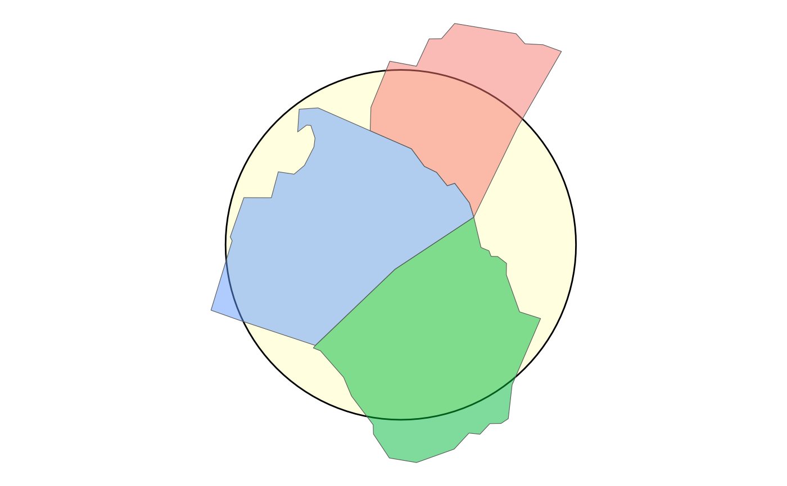

Wraps overedge::st_circle, overedge::st_square, and layer_neatline.
Usage
layer_frame(
data,
dist = NULL,
diag_ratio = NULL,
unit = "meter",
frame = "circle",
scale = 1,
rotate = 0,
inscribed = FALSE,
color = "black",
size = 1,
linetype = "solid",
fill = "white",
neatline = TRUE,
expand = FALSE,
union = TRUE,
...
)
make_frame(
x,
frame = "circle",
scale = 1,
rotate = 0,
inscribed = FALSE,
dTolerance = 0
)Arguments
- data
sforbboxclass object- dist
buffer distance in units. Optional.
- diag_ratio
ratio of diagonal distance of area's bounding box used as buffer distance. e.g. if the diagonal distance is 3000 meters and the "diag_ratio = 0.1" a 300 meter will be used. Ignored when
distis provided.- unit
Buffer units; defaults to meter.
- frame
Type of framing shape to add, "circle" or "square" around data.
- scale
numeric; scale factor, Default: 1
- rotate
numeric; degrees to rotate (-360 to 360), Default: 0
- inscribed
If
TRUE, make circle or square inscribed within x, ifFALSE, make it circumscribed.- color
Color of panel border, Default: 'black'
- size
Size of panel border, Default: 1
- linetype
Line type of panel border, Default: 'solid'
- fill
Fill color for frame.
- neatline
If TRUE, add a neatline to the returned layer.
- expand
Default
FALSE.IfTRUE, the function addsggplot2::scale_y_continuous()andggplot2::scale_x_continuous()to expand the map extent to provided parameters.- union
If
TRUE, union data before buffering and creating frame; defaults toTRUE.- ...
Additional parameters passed to overedge::layer_location_data. May include additional fixed aesthetics (e.g. alpha) or "fn" to apply to the frame object.
- x
A sf, sfc, or bbox object
- dTolerance
numeric; tolerance parameter, specified for all or for each feature geometry. If you run
st_simplify, the input data is specified with long-lat coordinates andsf_use_s2()returnsTRUE, then the value ofdTolerancemust be specified in meters.
See also
Other layer:
layer_scaled()
Examples
nc <- overedge::read_sf_path(system.file("shape/nc.shp", package = "sf"))
raleigh_msa <-
overedge::get_location(
type = nc,
name_col = "NAME",
name = c("Franklin", "Johnston", "Wake"),
crs = 3857
)
ggplot2::ggplot() +
layer_frame(
data = raleigh_msa,
frame = "circle",
fill = "lightyellow",
inscribed = FALSE
) +
layer_location_data(
data = raleigh_msa,
mapping = ggplot2::aes(fill = NAME),
alpha = 0.5
) +
ggplot2::guides(
fill = "none"
)
